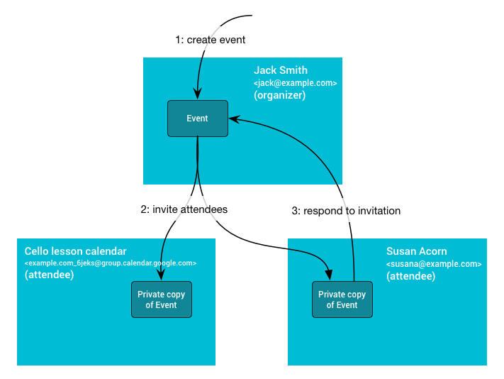

Create an event
If you have write access to the organizer's Google Calendar, you can add an
event using the Events: insert
method.
This method adds the event directly to the organizer's calendar, independently of their setting to add invitations.
Add attendees
With this method, you can also add attendees to the same event by adding their
email address to the attendees
property of the event. Any future changes made by the organizer to the event are
propagated to the attendees.
Attendees receive the invitation from the organizer's email address. Calendar users receive the invitation in their email or in their calendar, depending on their event settings in Calendar:
- If they have the setting
From everyone, the event is added directly to their calendar. - If they have the setting
Only if the sender is known, the event is added directly to their calendar if they have previously interacted with the organizer, if the organizer is in the same organization, or if the organizer is in their Google Contacts. If the organizer isn't known to them, they can click Add to calendar or RSVP by clicking Yes or Maybe in the invitation email. Then the event is added to their calendar. - If users have the setting
When I respond in email, all invitations aren't added to their calendar until the user RSVPs by clicking Yes, Maybe, or No in the invitation email.
For more information about how invitations are added to Calendar, see Manage invitations in Calendar.
Display the event directly in attendees' calendars
To display an event directly in Calendar attendees' calendars for any setting the attendee might have, you can set the attendee's RSVP or import a copy of the event directly in the attendee's calendar. For both methods, you need write access to the attendees' calendars; if you don't, consider adding the organizer to the attendee's contacts, which might require write access to the attendee's contacts.
Set the attendee's RSVP
To set an attendee's RSVP to an event, take the following steps:
- Create the event in the Calendar organizer's calendar and add attendees (see Add attendees).
- Use the
Events: updatemethod to set the attendee's RSVP toacceptedortentative. You must have write access to the attendee's calendar. There might be a slight delay before the event appears on the attendee's calendar. Learn more about how to use theEvents: updatemethod.
This method adds the event to the attendee's calendar, but the attendee might still see the banner in their email that the invitation was sent from an address previously unknown to them.
Import a copy of the event directly in the attendee's calendar
To import a copy of an event into an attendee's calendar, take the following steps:
- If you have write access to the organizer's Calendar calendar, import a copy
of the event using the
Events: importmethod. - Import another copy of the same event in the attendee's
calendar using
Events: import. You must have write access to the attendee's calendar. Use the same event ID (iCalUID) for the organizer's and the attendee's copies and make sure to specify the organizer in the attendee's copy.
With this method, the attendee can see the event in their calendar, but doesn't receive an invitation email from Calendar.
Add the organizer to the attendee's contacts
If you don't have the attendee's credentials, you can instruct the attendee or their organization to add the organizer's email address to their Google Contacts in advance to display an event directly in their calendar. There might be a slight delay for a newly created contact to take effect.
- Ask the Calendar user to add the organizer to their Google Contacts.
- If the attendees belong to an organization, you can ask the organization's
administrator to programmatically add email addresses to their users'
contacts. Ask the administrator to enable
domain-wide delegation,
impersonate the users and use the
People: createContactmethod to create contacts for each user, to ensure that future invitations from these email addresses automatically appear in their users' calendars. - If you have access to the attendee's contacts, you can also add the
organizer's email address to the attendee's contacts using the
People: createContactmethod.
Invite users by email
If you don't have write access to the organizer's Calendar calendar, or if you don't want to expose the organizer's email address, use the iCalendar protocol (RFC-5545) to invite users with email using an .ICS file.
If the attendee is a Calendar user with the setting Only if the sender is known
and they haven't previously interacted with or recorded the address as
known to them, the invitation isn't added to their calendar until they click
Add to calendar or they RSVP to the event.
Provide a link for users to add the event
Alternatively, if you want to make it easier for Calendar users to add an event as a one-off without keeping it updated, you can provide a link with a pre-filled event for the user to add themselves. This method creates a distinct event on the user's calendar, which you can't update unless you have access to the user's calendar.
Use the following link template:
https://calendar.google.com/calendar/r/eventedit?action=TEMPLATE&dates=20230325T224500Z%2F20230326T001500Z&stz=Europe/Brussels&etz=Europe/Brussels&details=EVENT_DESCRIPTION_HERE&location=EVENT_LOCATION_HERE&text=EVENT_TITLE_HERE
by updating the following information:
- Start and end dates and times: Use ISO 8601 format. In the above example,
replace
20230325T224500Zand20230326T001500Z. - Start and end time zones: Format as an IANA Time Zone Database name.
Place the time zones in the
stzandetzfields. - Event description: Must be URL encoded.
- Event location: Must be URL encoded.
- Event title: Must be URL encoded.
Example
Consider the example of building an appointment booking service to help users book appointments with a business. When a user books an appointment, you want your service to add an event to the booker's and the business's Google Calendar calendars.
For the best user experience, we recommend that the business gives write access to their calendar, so that you can add the event directly to the business's calendar (Create event) and invite the booker to that event (Add attendees). To make sure the booker sees the event in their calendar and gets reminded of it, inform them to check their emails and RSVP Yes to the event immediately after making a booking. Once they RSVP to the event, they're sent event notifications from Calendar per their notification settings.
If you want to add the event directly to the booker's calendar, inform bookers to add to their contacts the email address from which they will receive the invitation. Alternatively, ask bookers for write access to their calendar to programmatically RSVP on their behalf (Set the attendee's RSVP) and send them an email notification about the confirmed booking.
If the business doesn't want to expose their email address, use a user-specific email address to send the event to the booker by using email (Invite user from an email address).
Event propagation
The following diagram explains the dynamics. First, Jack creates an event on
his primary calendar (and thus owns the organizer copy). Then, he invites the
Cello lesson group secondary calendar and Susan, who has the event setting
Only if the sender is known. Attendees' copies are created on the Cello lesson
group secondary calendar, and on Susan's calendar if she knows Jack, otherwise
when she RSVPs or indicates she knows Jack. When Susan responds, the RSVP change
gets propagated back to the organizer, updating the organizer's copy with
Susan's response. These changes made to the organizer's copy of the event then
get propagated to the other attendees.

Shared event properties
The calendar where the event is created is the organizer calendar. This calendar owns the shared event information, including ID, start and end time, summary, and description. When this information is updated on the organizer calendar, the changes are propagated to attendee copies.
Private event properties
Not all information is shared between all the event copies. Some properties are
private, such as reminders, colorId, transparency, or the
extendedProperties.private property. These properties are controlled by the
attendee's settings and not by the organizer calendar.
Attendees can also change the shared properties of the event. However, these changes are only reflected on their own copy and might be lost if the organizer makes a change.
The only event change that is propagated from attendees back to the organizer is
the attendee's response status, stored in the
attendees[].responseStatus
property.